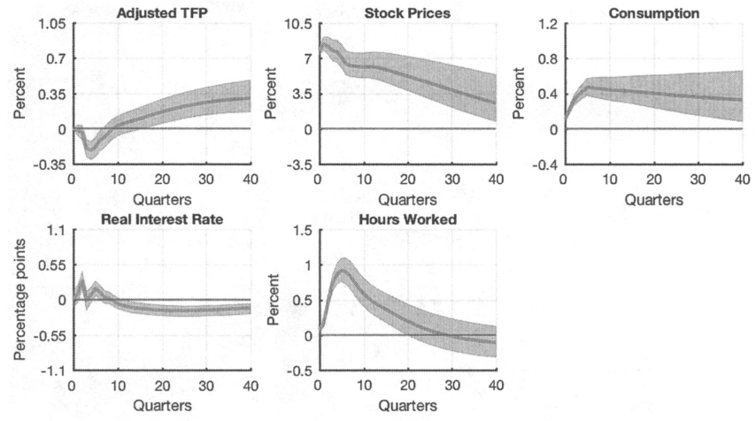
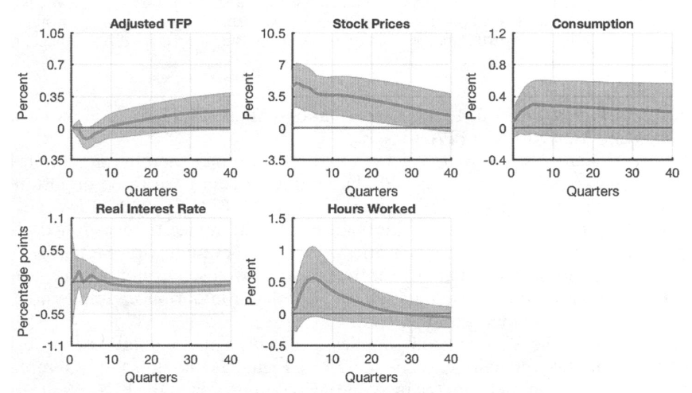
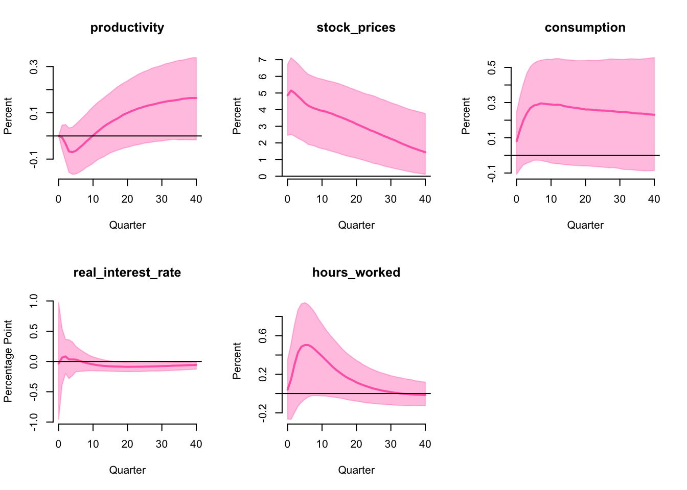
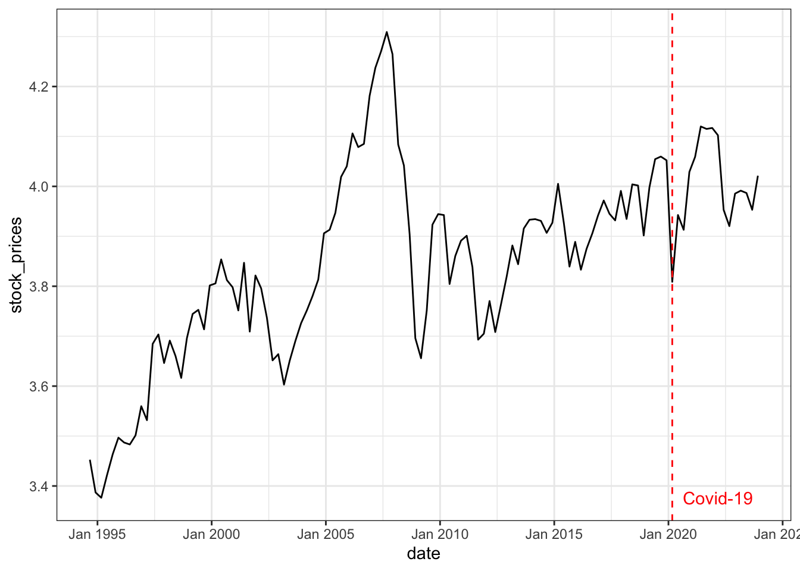
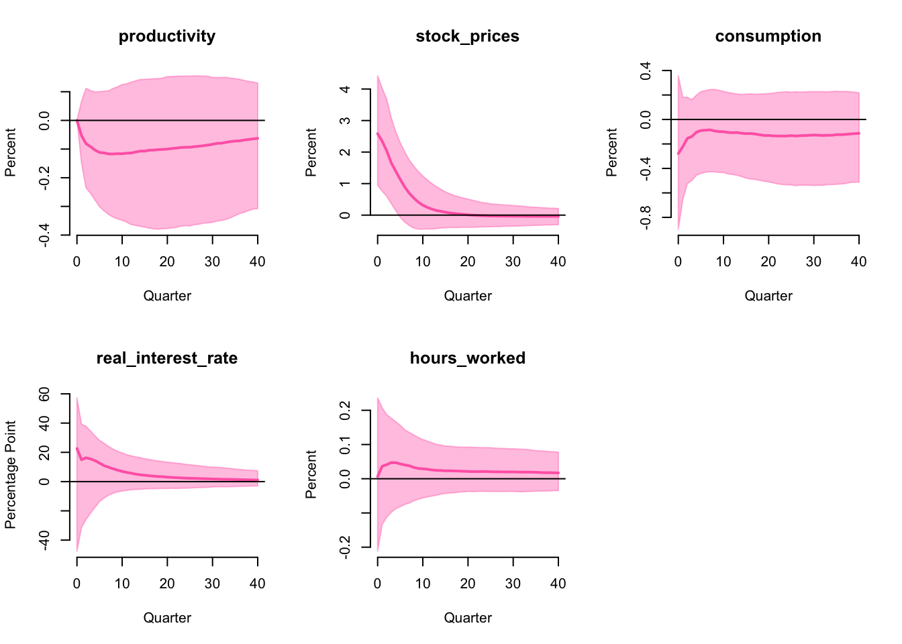

[,1] [,2]
[1,] -0.9613 1.0448
[2,] 0.9614 0.0000Optimism Shock
on the Australian Business Cycle
Introduction
In this research project, I…
R package bsvarSIGNs
- hopefully on CRAN next semester!
Implements Arias, Rubio-Ramı́rez, and Waggoner (2018)
Replicates US data
Extends to Australian data and more
bsvarSIGNs
Bayesian structural vector autoregression (bsvar)
Simultaneous equations + autoregression
Identified with many restrictions
- zero restrictions
- sign restrictions
- narrative restrictions
Question
Does optimism shock drive business cycles?
Theory suggests yes (Angeletos, Collard, and Dellas 2018)
Optimistic \(\rightarrow\) spend more and work harder \(\rightarrow\) economic boom!
What does the data say?
Optimism shock
Positively affects stock prices
Zero impact on productivity
\[ \begin{bmatrix} u_t^\text{productivity} \\ u_t^\text{stock prices} \\ u_t^\text{consumption} \\ u_t^\text{real interest rate} \\ u_t^\text{hours worked} \\ \end{bmatrix} = \begin{bmatrix} 0 & * & * & * & * \\ + & * & * & * & * \\ * & * & * & * & * \\ * & * & * & * & * \\ * & * & * & * & * \\ \end{bmatrix} \begin{bmatrix} \varepsilon_t^\text{optimism} \\ \varepsilon_t^2 \\ \varepsilon_t^3 \\ \varepsilon_t^4 \\ \varepsilon_t^5 \\ \end{bmatrix} \]
\(u_t\) reduced-form errors, \(\varepsilon_t\) structural shocks, \(*=\) no restrictions
Penalty function approach
Beaudry, Nam, and Wang (2011)
Studies optimism shock with penalty function approach (PFA).
Concludes optimism shock drives business cycle
Since significant boom in consumption and hours worked.

Original paper
Arias, Rubio-Ramı́rez, and Waggoner (2018)
Proves PFA imposes additional restrictions
Proposed an importance sampler that gives true solutions
Concludes optimism shock does not drive business cycle

Importance sampler algorithm
Orthogonal reduced-form parameterization:
\[ y_t' = x_t' B + e_t' Q' \text{chol}(\Sigma,\text{upper}) \]
Sample (\(\*B\), \(\*\Sigma\), \(\*Q\)) conditional on the zero restrictions.
If the sign restrictions are satisfied, keep the draw and compute an importance weight, otherwise discard.
Repeat steps 1-2 until the desired number of samples is obtained.
Resample with replacement using the importance weights.
Replication
Same US data, different code

Extension 1: Australian data
No significant impact

Extension 2: narrative restriction
Antolı́n-Dı́az and Rubio-Ramı́rez (2018)
Algorithm to impose narrative restrictions
Sign of structural shocks
…
Assume additionally that the optimism shock
- is negative when Covid-19 hits Australia in 2020 Q1
\[ \varepsilon_{2020 Q1}^\text{optimism} < 0 \]
Extension 2: Covid-19
A pessimism shock

Extension 2: pseudo proof
(To my knowledge) no paper has combined the two algorithms1
Both papers use importance sampler
Suppose the importance weights are \(w_1\) and \(w_2\)
To combine the two algorithms, resample with weights \(w\)
Where \(w = w_1 \times w_2\)
A more rigorous proof (with no guarantee of correctness) is available here
Extension 2: history
Historical values of optimism shock

Extension 2: result
Still no significant impact

Summary
Optimism shock does not drive business cycle
Result holds for both US and Australia
Result is robust to restriction on Covid-19
Appendix: simulation study
Suppose the true structural model is \[ \begin{bmatrix} -1 & 1\\ 1 & 0\\ \end{bmatrix} \begin{bmatrix} y_{1,t}\\ y_{2,t}\\ \end{bmatrix} = \begin{bmatrix} -1 & 1\\ 1 & 0\\ \end{bmatrix} \begin{bmatrix} y_{1,t-1}\\ y_{2,t-1}\\ \end{bmatrix} + \begin{bmatrix} \varepsilon_{1,t}\\ \varepsilon_{2,t}\\ \end{bmatrix}, \begin{bmatrix} \varepsilon_{1,t}\\ \varepsilon_{2,t}\\ \end{bmatrix} \sim \mathcal{N}( \begin{bmatrix} 0 \\ 0 \end{bmatrix} , \begin{bmatrix} 1 & 0 \\ 0 & 1 \\ \end{bmatrix} ) \] equivalently, we can simulate 1,000 observations from the reduced-form \[ \begin{bmatrix} y_{1,t}\\ y_{2,t}\\ \end{bmatrix} = \begin{bmatrix} 1 & 0\\ 0 & 1\\ \end{bmatrix} \begin{bmatrix} y_{1,t-1}\\ y_{2,t-1}\\ \end{bmatrix} + \begin{bmatrix} u_{1,t}\\ u_{2,t}\\ \end{bmatrix}, \begin{bmatrix} u_{1,t}\\ u_{2,t}\\ \end{bmatrix} \sim \mathcal{N}( \begin{bmatrix} 0 \\ 0 \end{bmatrix} , \begin{bmatrix} 1 & 1 \\ 1 & 2 \\ \end{bmatrix} ) \]
Putting zero and sign restrictions on the inverse of the structural matrix
\[ \begin{bmatrix} -1 & 1\\ 1 & 0\\ \end{bmatrix}^{-1} = \begin{bmatrix} 0 & 1\\ 1 & 1\\ \end{bmatrix} \Rightarrow \begin{bmatrix} 0 & +\\ + & +\\ \end{bmatrix} \] Posterior mean of 1,000 draws of the structural matrix is
References
Angeletos, George-Marios, Fabrice Collard, and Harris Dellas. 2018. “Quantifying Confidence.” Econometrica 86 (5): 1689–1726.
Antolı́n-Dı́az, Juan, and Juan F Rubio-Ramı́rez. 2018. “Narrative Sign Restrictions for SVARs.” American Economic Review 108 (10): 2802–29.
Arias, Jonas E, Juan F Rubio-Ramı́rez, and Daniel F Waggoner. 2018. “Inference Based on Structural Vector Autoregressions Identified with Sign and Zero Restrictions: Theory and Applications.” Econometrica 86 (2): 685–720.
Beaudry, Paul, Deokwoo Nam, and Jian Wang. 2011. “Do Mood Swings Drive Business Cycles and Is It Rational?” National Bureau of Economic Research.